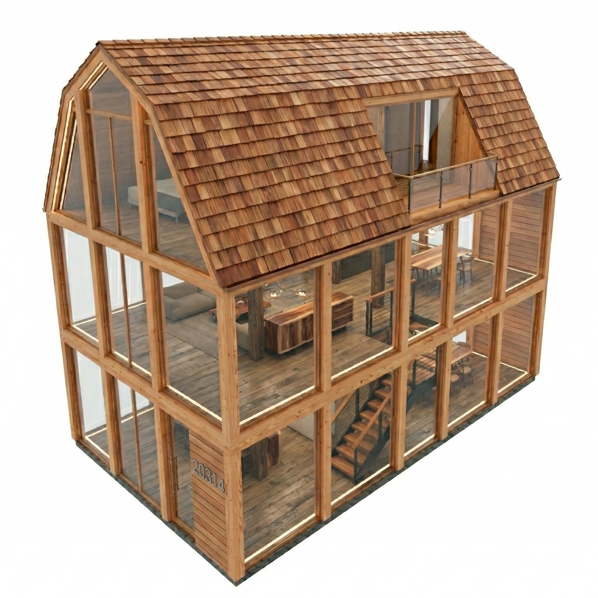
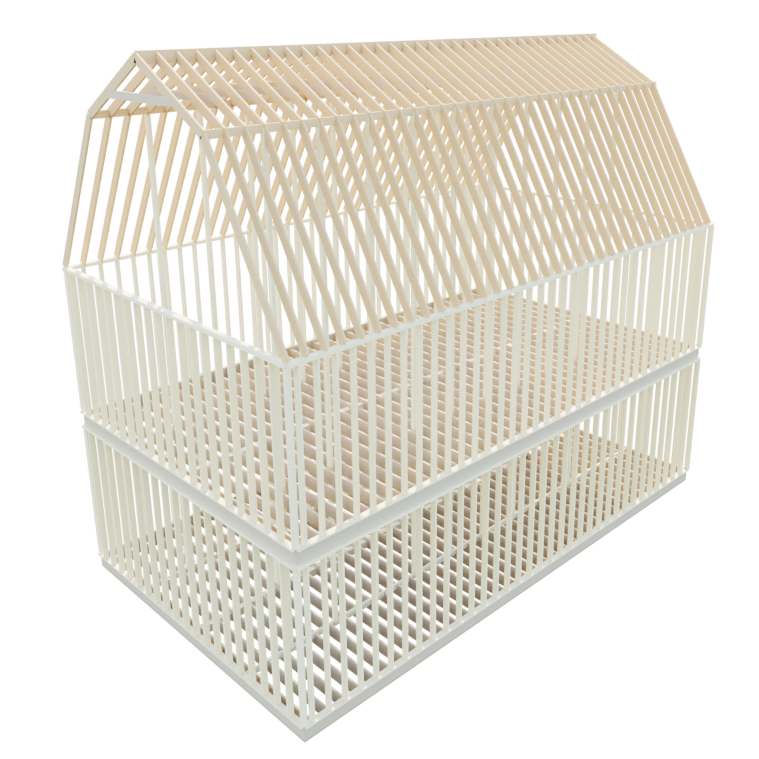

Salesforce AI Research

We introduce DreamHouse, a benchmark for physical generative reasoning — the capacity to synthesize artifacts that concurrently satisfy geometric, structural, constructability, and code-compliance constraints. Grounded in residential timber-frame construction, a domain with fully codified engineering standards and objectively verifiable correctness, DreamHouse comprises over 26,000 structures spanning 13 architectural styles verified to LOD 350, paired with a deterministic 10-test structural validation framework. Unlike static benchmarks, it supports iterative agentic interaction: models observe intermediate build states, generate construction actions, and receive structured environmental feedback. Extensive experiments with state-of-the-art VLMs reveal substantial capability gaps largely invisible on existing leaderboards, establishing physical validity as a critical evaluation axis orthogonal to visual realism.
Click a ground-truth image to see how each model responds.
| Model | Planner-Atomic | Planner-Reactive | Planner-Managed | ||||||
|---|---|---|---|---|---|---|---|---|---|
| Struct. | Visual | Joint | Struct. | Visual | Joint | Struct. | Visual | Joint | |
| GPT-5 | 0.792 | 0.312 | 0.035 | 0.302 | 0.293 | 0.003 | 0.333 | 0.179 | 0.008 |
| Claude 4.5 Opus | 0.716 | 0.406 | 0.071 | 0.428 | 0.239 | 0.003 | 0.713 | 0.278 | 0.031 |
| Gemini 3 Flash | 0.454 | 0.376 | 0.031 | 0.507 | 0.345 | 0.019 | 0.785 | 0.313 | 0.043 |
| Qwen3.5-397B-A17B | — | — | — | — | — | — | 0.206 | 0.261 | 0.016 |
| Qwen3-VL-30B-A3B | 0.000 | N/A | 0.000 | 0.000 | N/A | 0.000 | 0.000 | N/A | 0.000 |
| Qwen3-VL-8B | 0.000 | N/A | 0.000 | 0.000 | N/A | 0.000 | 0.000 | N/A | 0.000 |
@article{dreamhousegpt2026,
title = {DreamHouse: How Far Are Vision-Language Models
from Constructing the Real World?},
author = {Yang, Luyu and Dai, Yutong and Yan, An and
Prabhu, Viraj and Xu, Ran and Chen, Zeyuan},
journal = {arXiv preprint arXiv:2603.24866},
year = {2026},
}
Share results, ask questions, stay updated.
Scan with WeChat